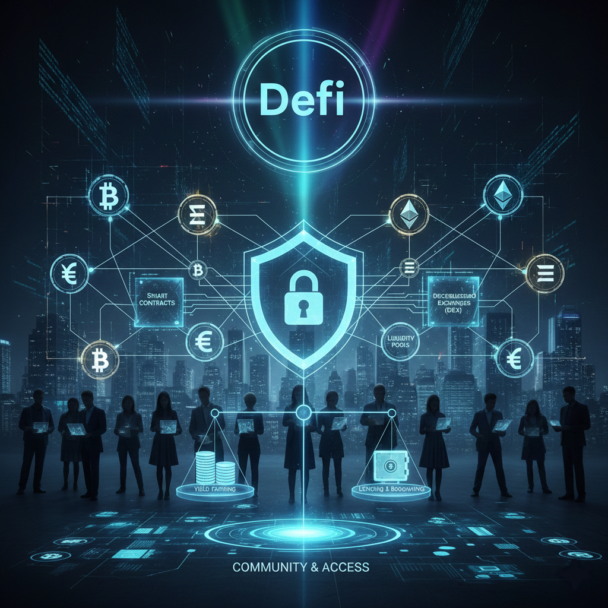

Το DeFi (Decentralized Finance) είναι “αποκεντρωμένα χρηματοοικονομικά”. Δηλαδή υπηρεσίες όπως ανταλλαγές, δανεισμός και αποδόσεις χωρίς τράπεζες, με έξυπνα συμβόλαια (smart contracts) πάνω σε blockchains.

Η ταχύτητα στο DeFi εξαρτάται από το blockchain που χρησιμοποιείς (π.χ. Ethereum, Solana, Polygon). Συνήθως οι συναλλαγές ολοκληρώνονται από δευτερόλεπτα έως λίγα λεπτά, ανάλογα με το δίκτυο και τη συμφόρηση.
Τα fees στο DeFi είναι κυρίως “gas fees” που πληρώνονται στο blockchain για να εκτελεστεί μια ενέργεια (swap, δανεισμός, staking). Όταν το δίκτυο έχει φόρτο, τα fees ανεβαίνουν.
Το DeFi βασίζεται σε τεχνολογίες που κάνουν τις συναλλαγές αυτόματες και διαφανείς:
Το DeFi συνεχίζει να μεγαλώνει, με στόχο πιο εύκολη χρήση, χαμηλότερα fees και καλύτερη ασφάλεια. Πολλοί το βλέπουν ως “εναλλακτική υποδομή” για χρηματοοικονομικές υπηρεσίες παγκοσμίως.
Το DeFi ανοίγει τον δρόμο για οικονομικές υπηρεσίες χωρίς μεσάζοντες, αλλά χρειάζεται προσοχή: σωστό wallet, έρευνα στο πρωτόκολλο και διαχείριση ρίσκου.